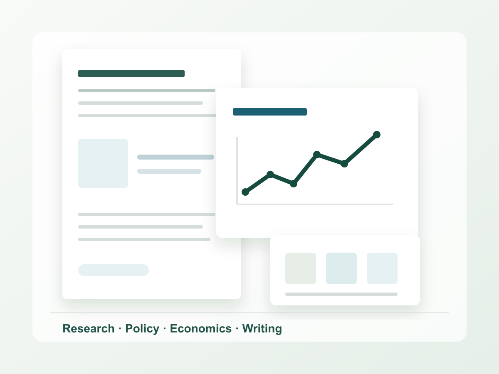

Research Paper
Student research on legal ambiguity, selective enforcement, and political participation.
Explore researchJiangsu Tianyi High School AP Program
I am Shawn Xiao, a high school student at Jiangsu Tianyi High School AP Program. This site brings together my developing interests in research, policy writing, economics, and investment analysis.

Student research on legal ambiguity, selective enforcement, and political participation.
Explore researchEconomics, public policy, investment, and essay competitions developed through structured preparation.
View experienceA SIC investment project focused on portfolio construction, risk review, and ESG considerations.
Review projectShort analytical writing on politics, economics, public policy, and social issues.
Read writingAbout
My academic interests began with questions about political systems and social problems: why institutions work differently across societies, how public policies affect everyday life, and how economic incentives shape decisions made by individuals, firms, and governments.
At this stage, I am most interested in the connection between political science, economics, and public policy. Research papers, essay competitions, and investment projects give me practical ways to ask clearer questions, evaluate evidence, and write with more precision.
This portfolio is a working record of that process. It shows the direction I am gradually building while leaving room for future coursework, research, and writing.
Research
A working student research paper on how uncertain rules and uneven enforcement can shape civic behavior, online speech, and willingness to participate in political life.
This project asks how people respond when political rules are unclear or enforced unevenly. Instead of treating participation only as a matter of personal interest or courage, the paper looks at how legal ambiguity, selective enforcement, and platform pressure can affect what citizens choose to say, avoid, or move into less visible spaces.
View Research PaperHow do legal ambiguity and selective enforcement shape citizens' willingness to express political views, join discussion, or remain silent?
The paper uses a literature review, concept mapping, and close reading of policy language and secondary sources. The goal is to build a clear argument rather than claim original fieldwork.
Competitions and Projects
Investment Project
A student investment project focused on portfolio construction, investment thesis writing, risk analysis, ESG considerations, and sector allocation.
View SIC ReportThe portfolio uses a diversified framework across sectors, with each holding connected to a short investment thesis, valuation consideration, and identifiable risk.
| Area | Allocation | Rationale |
|---|
The project focuses on explaining why each holding belongs in the portfolio, how it connects to a sector view, and what evidence would weaken the original thesis.
The risk review considers concentration, valuation sensitivity, interest-rate changes, sector exposure, and the limits of short-term market predictions.
ESG is treated as part of long-term risk assessment, especially when governance quality, regulation, or sustainability concerns could affect a company's outlook.
Writing
A developing collection of writing on political participation, economics, public policy, and social issues.
Contact
Contact information can be updated before publication. I have left public links blank until I am ready to share official profiles.